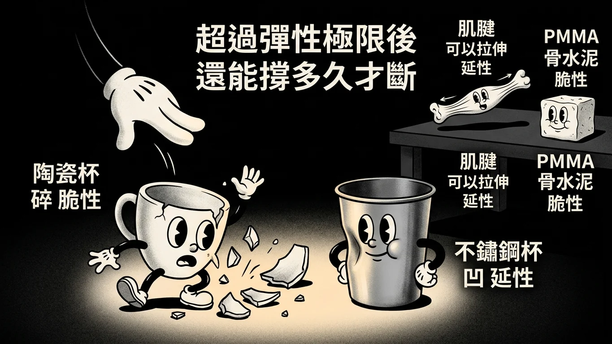
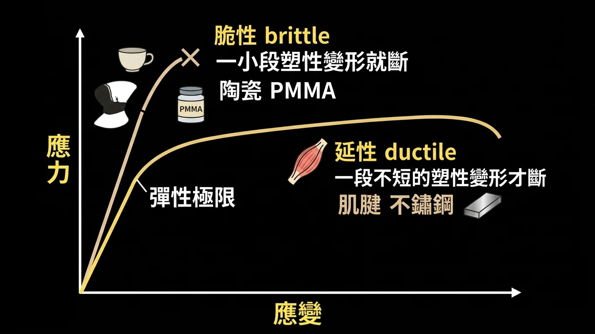
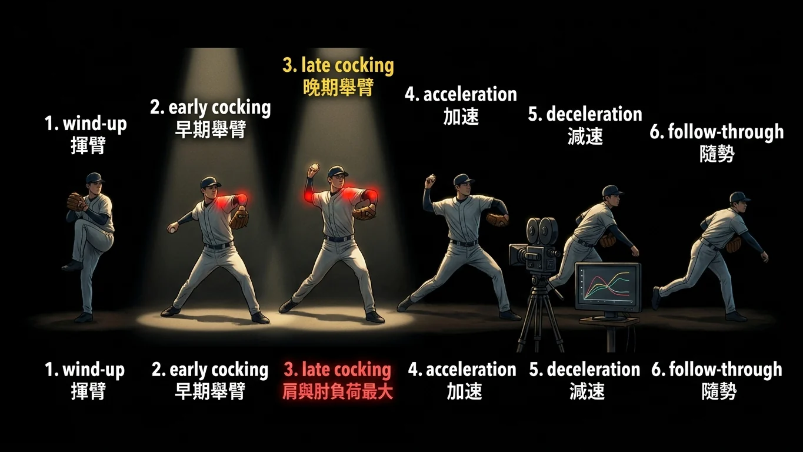
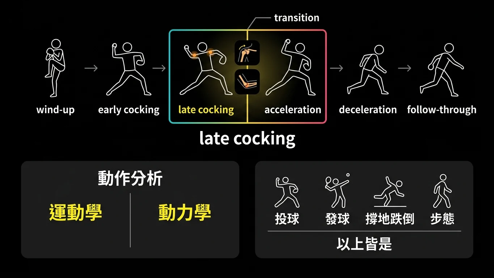
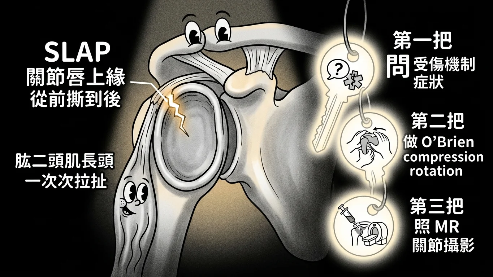
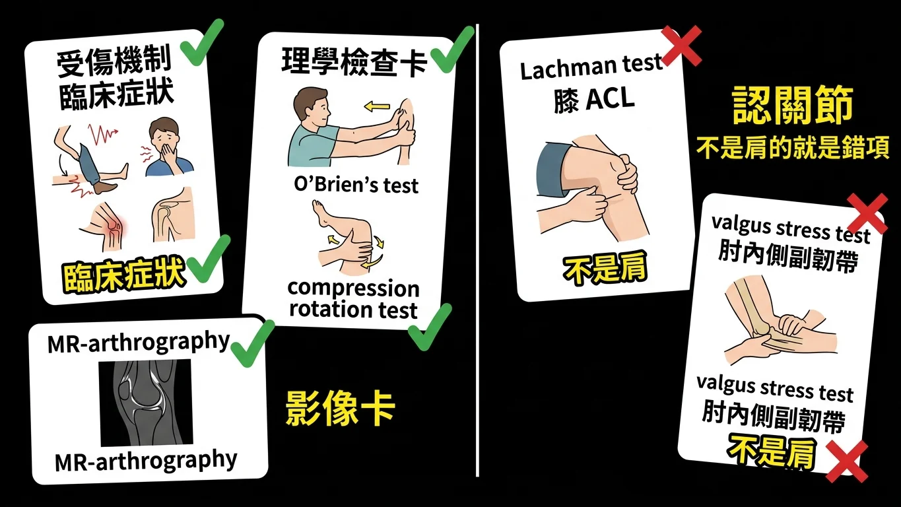
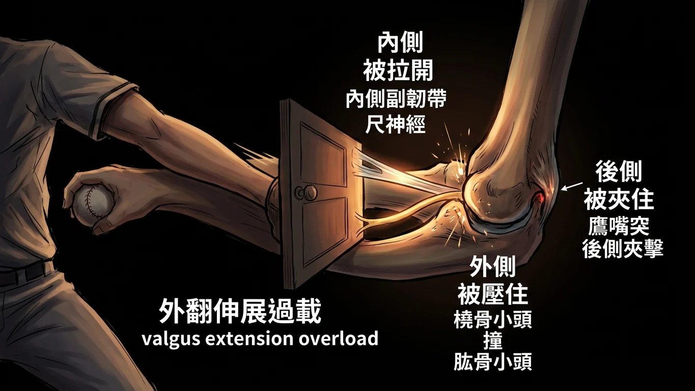
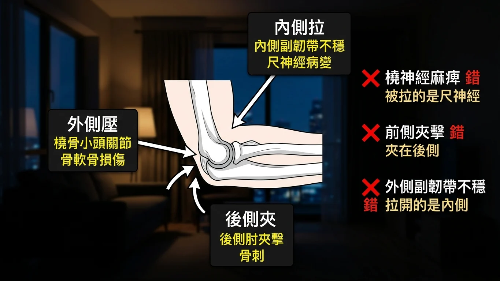
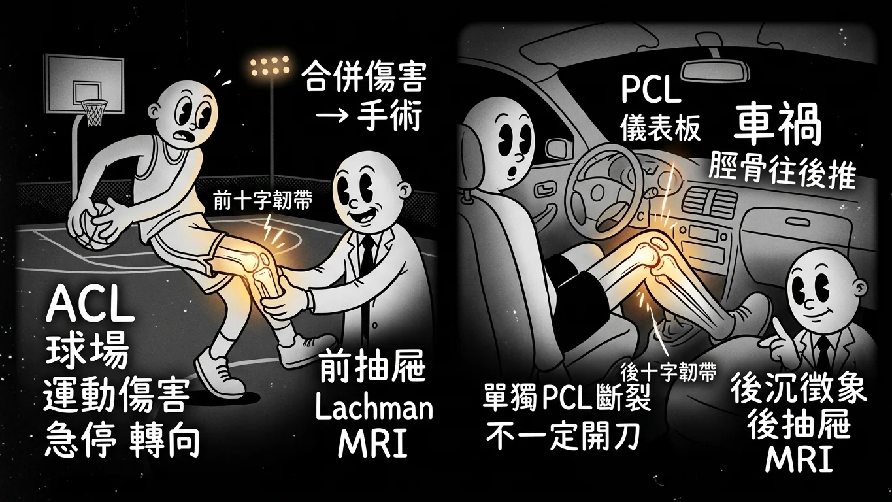
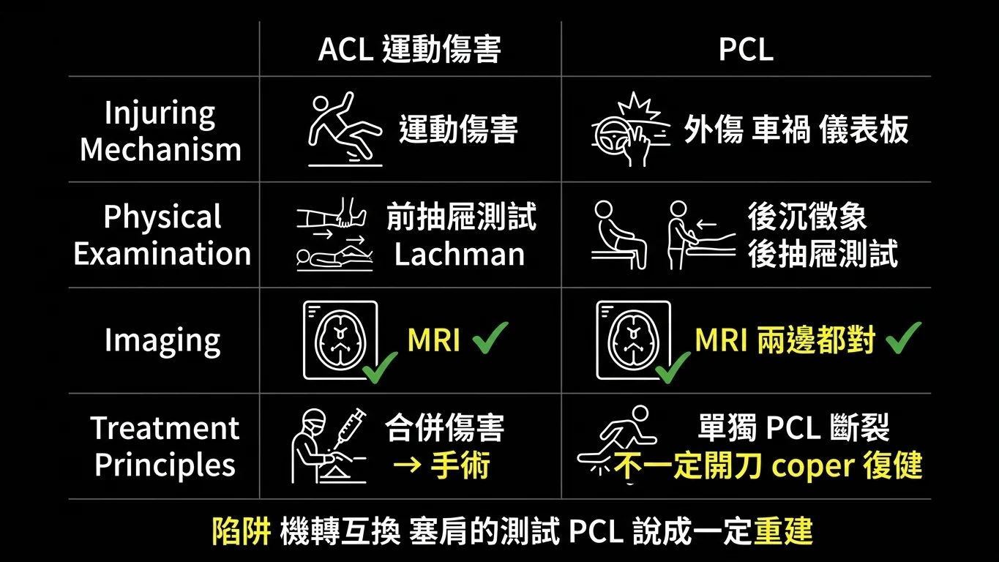

一、材料會不會碎：脆性與延性
情境場景

情境場景：陶瓷杯摔下去碎了，不鏽鋼杯摔下去只凹了一塊。
故事
老師在 113 年的詳解裡用了一個非常好懂的比喻，直接借來用：
陶瓷杯摔到地上會碎。不鏽鋼杯摔到地上只會凹進去。
兩者的差別在於：受力超過彈性極限 之後，材料還能撐多久才斷 。
脆性材料 （brittle）：超過彈性極限後，只經過一小段 塑性變形就斷裂。陶瓷、PMMA（骨水泥）都是。所以它們碎 。
延性材料 （ductile）：超過彈性極限後，會先進入一段不短的 塑性變形——被拉長、被壓扁、被凹——才斷裂。不鏽鋼、肌腱 都是。所以它們凹而不碎 。
三年三題，每年都拿肌腱來考：肌腱可以拉伸，是延性材料 。111 年說它是脆性的（錯），112 與 113 年說它是延性的（對）。
113 年還多了一個小插曲：選項 (D)「不鏽鋼是脆性材料」——這句也是錯的，所以申覆後 (C)(D) 都給分。不鏽鋼杯不會碎。
應力應變圖

應力應變圖：脆性材料過了彈性極限很快斷裂，延性材料有一段長長的塑性變形。
回到現實
詳解原文（113）:「(C) brittle material 在超過彈性變形的極限(elastic limit)後，在經過”一小段”plastic deformation就會rupture；反之，ductile material 在超過彈性變形的極限(elastic limit)後，會進入一段不短的塑性變形(plastic deformation)才會rupture。」
詳解原文（112）:「(A) (C)brittle-little plastic deformation; ductile-large plastic deformation (B)例子：brittle-PMMA; ductile-tendon」
兩條定義、四個例子：
・脆性（brittle） ＝破壞前塑性變形很少 。例：陶瓷、PMMA 。延性（ductile） ＝破壞前塑性變形很多 。例：肌腱、不鏽鋼 。
三年的錯項只有兩種：把肌腱說成脆性、把不鏽鋼說成脆性，或把「脆性」的定義寫成「塑性變形多」。記住兩個杯子就夠了。
111 年 期中考 第 54 題
Which statement(s) is/are false?
(A) Brittle material undergoes very little plastic deformation before failure.
(B) Tendon is a brittle material.
(C) Ductile material undergoes more plastic deformation before failure.
(D) Ceramics is a brittle material.
答案與詳解
中文題目： 下列敘述何者錯誤 ？
(A) 脆性材料在破壞前只有極少的塑性變形。
(B) 肌腱是脆性材料。
(C) 延性材料在破壞前有較多的塑性變形。
(D) 陶瓷是脆性材料。
答案：(B) Tendon is a brittle material.
詳解原文:「Tendon is a ductile Materials」
肌腱可以拉伸，是延性 材料。其餘三句都是標準定義。
出處：周伯禧 基礎生物力學 ｜ BM111 BLOCK-8 期中考詳解.pdf 第 44 頁
112 年 期中考 第 54 題
Which statement(s) is/are True？
(A) Brittle material undergoes very little plastic deformation before failure.
(B) Tendon is a ductile material
(C) Ductile material undergoes more plastic deformation before failure.
(D) All of the above.
答案與詳解
中文題目： 下列敘述何者正確 ？
(A) 脆性材料在破壞前只有極少的塑性變形。
(B) 肌腱是延性材料。
(C) 延性材料在破壞前有較多的塑性變形。
(D) 以上皆是。
答案：D
詳解原文:「(A) (C)brittle-little plastic deformation; ductile-large plastic deformation (B)例子：brittle-PMMA; ductile-tendon」
與 111 年同一組句子，把肌腱那句改對了，於是三句全對。
出處：周伯禧 基礎生物力學 ppt pg. 16-18 ｜ BM112_Block 8 期中考(含申覆內容與結果).pdf 第 73 頁
113 年 期中考 第 64 題 ｜ 申覆後 (C)(D) 皆給分
Which statement(s) is/are False？
(A) Ceramics is a brittle material.
(B) Tendon is a ductile material
(C) Brittle material undergoes more plastic deformation before failure.
(D) Stainless steel is a brittle material.
答案與詳解
中文題目： 下列敘述何者錯誤 ？
(A) 陶瓷是脆性材料。
(B) 肌腱是延性材料。
(C) 脆性材料在破壞前有較多的塑性變形。
(D) 不鏽鋼是脆性材料。
答案：(C) 申覆後 (C)(D) 皆給分
詳解原文:「(A)……陶瓷杯摔到地板會碎即為brittle material的表現 (B)……tendon可以拉伸，具有延展性(ductility) (C)……brittle material 在超過彈性變形的極限後，在經過”一小段”plastic deformation就會rupture (D)……不鏽鋼杯摔到地板只會凹進去，不會碎掉，所以不為brittle material，而是ductile material。」
(C) 把脆性的定義寫反；(D) 把不鏽鋼說成脆性——兩句都錯 ，所以申覆後兩個都給分。
出處：運動創傷及運動醫學 周伯禧 ｜ BM113_Block8期中考詳解.pdf 第 79 頁
二、動作分析，與投球最傷的那一瞬間
情境場景

情境場景：投球的六個階段像一條拉滿的弓，最緊的那一瞬間就是最容易斷的時候。
故事
動作分析（motion analysis）是這一科的工具箱。它拆成兩半：運動學 （kinematics）看動作長什麼樣 ——關節角度、速度、順序；動力學 （kinetics）算關節承受多少力 。
考題三年都問「動作分析能用在哪些情境」，選項年年換：投球、網球發球、跌倒時手撐地、ACL／PCL 不穩的步態、膝退化性關節炎的步態……答案永遠是「以上皆是」 。因為只要是「人在動、關節在受力」的事，都在它的定義裡。
而動作分析最經典的應用，就是投球 。一顆球投出去分成六個階段：揮臂（wind-up）→ 早期舉臂（early cocking）→ 晚期舉臂（late cocking）→ 加速（acceleration）→ 減速（deceleration）→ 隨勢（follow-through） 。
「哪一段最傷？」
「把手臂想成一把弓。晚期舉臂到早期加速 的那一瞬間，肩膀外旋到極限、手肘被外翻的力量往內側拉開——弓拉到最滿的時候 。肩關節與肘關節的負荷都在這一刻達到最大。」
111 年問肩、112 年問肘、113 年又問肩，答案都是 late cocking & early acceleration 。
投球分期

投球分期：六個階段，肩與肘負荷在晚期舉臂與早期加速達到最高。
回到現實
詳解原文（111 第 56 題）:「Motion analysis定義廣泛,關於Kinesiology等等都可以算其中一部分 其可分為Kinematics和Kinetic Kinematics是study of motion，指動作上的差異，觀察物體如何運動 Kinetics是計算關節在運動中受力的大小 所以(A)(B)(C)都包含在以上兩者的定義中」
詳解原文（111 第 57 題）:「在Late cocking & early acceleration phase時期，肩膀和手肘承受最大的力量，所以這時候肩膀與肘關節最容易受傷。」
動作分析： Kinematics（動作本身）＋ Kinetics（關節受力）。投球、發球、撐地跌倒、各種步態分析——全部都是應用 ，選「以上皆是」。
投球六階段： wind-up → early cocking → late cocking → early acceleration → deceleration → follow-through。肩與肘的最大負荷都在粗體那一段。
113 年的詳解另外補了兩個臨床連結：手舉過肩的運動 （網球、棒球、排球、羽球）是旋轉肌袖撕裂的來源；跌倒時手撐地 （fall on the outstretched hand）是手腕、肩、肘上肢創傷的重要機轉。這兩句會在本科其他題的選項裡反覆出現。
111 年 期中考 第 56 題
Motion analysis can be clinically applied in which of the followings?
(A) Study of baseball pitching
(B) Simulation of fall on the outstretched hand
(C) Gait Analysis in patients with ACL instability
(D) All of the above
答案與詳解
中文題目： 動作分析可臨床應用於下列何者？
(A) 棒球投球的研究
(B) 模擬跌倒時手撐地
(C) ACL 不穩定病人的步態分析
(D) 以上皆是
答案：(D) All off the above
詳解原文:「Motion analysis定義廣泛……所以(A)(B)(C)都包含在以上兩者的定義中」
三個選項分別是運動、創傷、步態——都在動作分析的範圍內。
出處：周伯禧 基礎生物力學 ｜ BM111 BLOCK-8 期中考詳解.pdf 第 46 頁
112 年 期中考 第 56 題
Motion analysis can be clinically applied in which of the followings?
(A) Analysis of elbow joint loading during pitching
(B) Analysis of shoulder joint loading during fall on the outstretched hand.
(C) Gait Analysis in patients with PCL instability.
(D) All of the above.
答案與詳解
中文題目： 動作分析可臨床應用於下列何者？
(A) 投球時肘關節負荷的分析
(B) 跌倒手撐地時肩關節負荷的分析
(C) PCL 不穩定病人的步態分析
(D) 以上皆是
答案：D
詳解原文:「……所以(A)(B)(C)都包含在以上兩者的定義中 很古喔~~」
與 111 年同題，選項只是把 ACL 換成 PCL、把「研究」改成「負荷分析」。
出處：周伯禧 運動創傷與運動醫學（ppt pg 3) ｜ BM112_Block 8 期中考(含申覆內容與結果).pdf 第 75 頁
113 年 期中考 第 66 題
Motion analysis can be clinically applied in which of the followings?
(A) Analysis of shoulder joint loading for tennis serve
(B) Analysis of elbow joint loading during fall on the outstretched hand.
(C) Gait Analysis in patients with osteoarthritis of the knee joint.
(D) All of the above.
答案與詳解
中文題目： 動作分析可臨床應用於下列何者？
(A) 網球發球時肩關節負荷的分析
(B) 跌倒手撐地時肘關節負荷的分析
(C) 膝關節退化性關節炎病人的步態分析
(D) 以上皆是
答案：(D)
詳解原文:「(A)手舉過肩的運動，如網球、棒球、排球、羽球都有可能出現 RCT的運動傷害 (B)……跌倒時用手撐地上(outstretched hand)是上肢創傷的重要因素 (C)正確」
第三年、第三組例子，答案還是「以上皆是」。
出處：周伯禧 運動創傷與運動醫學 課堂ppt ｜ BM113_Block8期中考詳解.pdf 第 82 頁
111 年 期中考 第 57 題
The highest shoulder joint loading can occur on which of the time interval during pitching motion?
(A) Winding phase
(B) Late cocking & early acceleration phase
(C) Deceleration phase
(D) Follow through phase
答案與詳解
中文題目： 投球動作中，肩 關節負荷最高發生在哪一個時期？
(A) 揮臂期
(B) 晚期舉臂與早期加速期
(C) 減速期
(D) 隨勢期
答案：(B) Late cocking & early acceleration phase
詳解原文:「在Late cocking & early acceleration phase時期，肩膀和手肘承受最大的力量，所以這時候肩膀與肘關節最容易受傷。」
弓拉到最滿的那一刻。
出處：周伯禧 運動創傷及運動醫學 ｜ BM111 BLOCK-8 期中考詳解.pdf 第 46 頁
112 年 期中考 第 57 題
The highest elbow joint loading can occur on which of the time interval during pitching motion?
(A) Winding phase,
(B) Late cocking & early acceleration phase,
(C) Deceleration phase,
(D) Follow through phase.
答案與詳解
中文題目： 投球動作中，肘 關節負荷最高發生在哪一個時期？
(A) 揮臂期
(B) 晚期舉臂與早期加速期
(C) 減速期
(D) 隨勢期
答案：B
原卷詳解欄留空 。把「肩」換成「肘」，答案不變——111 年的詳解已經說了「肩膀和手肘」都在這一期承受最大力量。
出處：周伯禧 運動創傷與運動醫學 ｜ BM112_Block 8 期中考(含申覆內容與結果).pdf 第 75 頁
113 年 期中考 第 67 題
The highest shoulder joint loading can occur on which of the time interval during pitching motion?
(A) Winding phase
(B) Late cocking & early acceleration phase
(C) Deceleration phase
(D) Follow through phase
答案與詳解
中文題目： 投球動作中，肩關節負荷最高發生在哪一個時期？
(A) 揮臂期
(B) 晚期舉臂與早期加速期
(C) 減速期
(D) 隨勢期
答案：(B)
詳解原文:「經典考古題」
與 111 年第 57 題逐字相同 。
出處：周伯禧 運動創傷與運動醫學 ｜ BM113_Block8期中考詳解.pdf 第 84 頁
三、肩：SLAP 怎麼診斷
情境場景

情境場景：關節唇上緣從前撕到後，三把鑰匙才打得開這個診斷。
故事
肩關節的關節窩很淺，全靠一圈軟骨的關節唇 把它加深。肱二頭肌長頭的肌腱就接在關節唇的上緣 。
投手一次又一次把手臂拉到極限，那條肌腱一次又一次拉扯關節唇上緣，最後把它從前面撕到後面 。這就是 SLAP ——Superior Labrum Anterior to Posterior lesion。
要診斷它，三年的題目給的答案很一致，可以整理成三把鑰匙 ：
第一把：問。 受傷機制與臨床症狀——投擲運動員、肩深處疼痛、卡住感。第二把：做。 理學檢查——O'Brien's test （主動壓迫測試）、compression rotation test （壓迫旋轉測試）。第三把：照。 影像——MR 關節攝影 （MR-arthrography），把顯影劑打進關節腔，撕裂處才看得清楚。
三把都對。所以 111 年問「哪些有幫助」答「以上皆是」。
112 與 113 年改問「哪一個沒有 幫助」，塞進來的錯項是別的關節的測試 ：Lachman test 是膝的 ACL ，valgus stress test 是肘（或膝）的內側副韌帶 。認出它們不屬於肩，就結案。
診斷三把鑰匙

診斷三把鑰匙：問受傷機制、做 O'Brien 與 compression rotation、照 MR 關節攝影。
回到現實
詳解原文（111）:「1.受傷機制＆臨床症狀 2.PE（O'Brien test）以及 3.影像學的MR Arthrography 都對於SLAP的診斷有所幫助。」
詳解原文（112）:「Lachman test用於檢測ACL，非SLAP。其他三個選項皆為SLAP之檢查。」
屬於 SLAP 的： 受傷機制與症狀、O'Brien's test 、compression rotation test 、MR-arthrography 。
不屬於 SLAP 的（三年的錯項）： Lachman test （膝 ACL）、valgus stress test （肘內側副韌帶）。
這一格的解法是認關節 ：題目問肩，選項裡凡是膝或肘的檢查就是「沒有幫助」的那一個。第五章會反過來用同一招——問 ACL 時把 compression rotation test 塞進來當錯項。
111 年 期中考 第 55 題
Which of the following(s) can be helpful in diagnosing Superior Labrum Anterior to Posterior Lesion (SLAP)?
(A) MR-Arthrography
(B) Injury Mechanism & Clinical S/S
(C) O'Brien's Test
(D) All of the above
答案與詳解
中文題目： 下列何者有助於診斷上關節唇前後病變（SLAP）？
(A) MR 關節攝影
(B) 受傷機制與臨床症狀
(C) O'Brien 測試
(D) 以上皆是
答案：(D) All of the above
詳解原文:「1.受傷機制＆臨床症狀 2.PE（O'Brien test）以及 3.影像學的MR Arthrography 都對於SLAP的診斷有所幫助。」
問、做、照——三把鑰匙都對。
出處：周伯禧 基礎生物力學 ｜ BM111 BLOCK-8 期中考詳解.pdf 第 45 頁
112 年 期中考 第 55 題
Which of the following(s) may not be helpful in diagnosing Superior Labrum Anterior to Posterior Lesion(SLAP))？
(A) MR-Arthrography.
(B) Compression Rotation Test
(C) O'Brien's Test
(D) Lachman Test.
答案與詳解
中文題目： 下列何者無助於 診斷上關節唇前後病變（SLAP）？
(A) MR 關節攝影
(B) 壓迫旋轉測試
(C) O'Brien 測試
(D) Lachman 測試
答案：D
詳解原文:「Lachman test用於檢測ACL，非SLAP。其他三個選項皆為SLAP之檢查。」
Lachman 是膝 的檢查。
出處：周伯禧 運動創傷與運動醫學（ppt pg.66, 67） ｜ BM112_Block 8 期中考(含申覆內容與結果).pdf 第 73 頁
113 年 期中考 第 65 題
Which of the following(s) may not be helpful in diagnosing Superior Labrum Anterior to Posterior Lesion (SLAP)？
(A) MR-Arthrography.
(B) Valgus Stress Test
(C) O'Brien's Test
(D) Compression Rotation Test.
答案與詳解
中文題目： 下列何者無助於 診斷上關節唇前後病變（SLAP）？
(A) MR 關節攝影
(B) 外翻壓力測試
(C) O'Brien 測試
(D) 壓迫旋轉測試
答案：(B)
原卷詳解欄留空 。外翻壓力測試檢查的是肘 （或膝）的內側副韌帶，不是肩關節唇。
出處：運動創傷及運動醫學 周伯禧 ppt p11, 12 ｜ BM113_Block8期中考詳解.pdf 第 80 頁
四、肘：投手的外翻伸展過載
情境場景

情境場景：手肘被往外扳，內側拉開、外側撞擊、後側夾住。
故事
投球時，手肘在晚期舉臂到加速那一瞬間承受一股外翻 （valgus）的力——前臂被往外扳。同時手肘正在快速伸直 。這兩件事加起來，就叫外翻伸展過載 （valgus extension overload），是投手肘傷的最常見原因。
把手肘想成一扇被往外扳的門，三個地方會出事：
內側被拉開。 內側副韌帶（MCL／UCL）被扯鬆 → 內側副韌帶不穩 ；跟它並排走的尺神經 被拉到 → 尺神經病變 （小指麻）。
外側被壓住。 橈骨小頭撞上肱骨小頭 → 橈骨小頭關節的骨軟骨損傷 。
後側被夾住。 伸直時鷹嘴突撞進鷹嘴窩後內側 → 後側夾擊、骨刺 。
三年三題全部問「不 相關的是哪一個」，錯項分別是：橈神經麻痺 （111，受影響的是尺神經不是橈神經）、前側夾擊 （112，夾擊在後側不在前側）、外側副韌帶不穩 （113，被拉開的是內側不是外側）。
三個受傷點

三個受傷點：內側拉開、外側壓迫、後側夾擊；橈神經、前側、外側韌帶不在名單上。
回到現實
詳解原文（113）:「(A)投球的stress主要在medial side，非lateral side」
詳解原文（111）:「非常古，背誦題」
外翻伸展過載會造成的（三年的正確關聯）：
・內側副韌帶不穩 （medial collateral ligament instability）尺神經病變 （ulnar nerve neuropathy）橈骨小頭關節的骨軟骨損傷 （osteochondral injury of the radio-capitellar joint）後側肘夾擊 （posterior elbow impingement）
不會造成的（三年的錯項）：
・橈神經麻痺 （radial nerve palsy）——被拉的是內側的尺神經前側肘夾擊 （anterior elbow impingement）——夾擊在後側外側副韌帶不穩 （lateral collateral ligament instability）——被拉開的是內側
記法：內側拉、外側壓、後側夾。 三個方位對應三種傷，凡是方位錯的（外側韌帶、前側夾擊）或神經錯的（橈神經），就是答案。112 年有人申覆前側夾擊，老師維持原答案。
111 年 期中考 第 59 題
Valgus Extension Overload is probably the most common cause of elbow injury in base ball pitchers. It is not associated with
(A) medial collateral ligament instability
(B) osteochondral injuries of the radio-capitellar joint
(C) radial nerve palsy
(D) posterior elbow
答案與詳解
中文題目： 外翻伸展過載可能是棒球投手肘部傷害最常見的原因。它與下列何者無關 ？
(A) 內側副韌帶不穩
(B) 橈骨小頭關節的骨軟骨損傷
(C) 橈神經麻痺
(D) 後側肘
答案：(C) radial nerve palsy
詳解原文:「非常古，背誦題」
被拉到的是內側的尺神經 ，不是橈神經。
出處：周伯禧 運動創傷及運動醫學 ｜ BM111 BLOCK-8 期中考詳解.pdf 第 48 頁
112 年 期中考 第 59 題 ｜ 申覆後維持原答案
Valgus Extension Overload is probably the most common cause of elbow injury in baseball pitchers. It is not associated with :
(A) medial collateral ligament instability,
(B) osteochondral injuries of the radio-capitellar joint,
(C) ulnar nerve neuropathy
(D) anterior elbow impingement.
答案與詳解
中文題目： 外翻伸展過載可能是棒球投手肘部傷害最常見的原因。它與下列何者無關 ？
(A) 內側副韌帶不穩
(B) 橈骨小頭關節的骨軟骨損傷
(C) 尺神經病變
(D) 前側肘夾擊
答案：D（申覆後維持原答案）
原卷詳解欄留空 。夾擊發生在後側 （鷹嘴突撞進鷹嘴窩），不在前側。這年把 111 年的「橈神經」換回正確的「尺神經」，改用方位設陷阱。
出處：周伯禧 運動創傷與運動醫學（ppt pg.50, 51） ｜ BM112_Block 8 期中考(含申覆內容與結果).pdf 第 76 頁
113 年 期中考 第 69 題
Valgus Extension Overload is probably the most common cause of elbow injury in baseball pitchers. It is not associated with :
(A) lateral collateral ligament instability
(B) osteochondral injuries of the radio-capitellar joint
(C) ulnar nerve neuropathy
(D) posterior elbow impingement.
答案與詳解
中文題目： 外翻伸展過載可能是棒球投手肘部傷害最常見的原因。它與下列何者無關 ？
(A) 外側副韌帶不穩
(B) 橈骨小頭關節的骨軟骨損傷
(C) 尺神經病變
(D) 後側肘夾擊
答案：(A)
詳解原文:「(A)投球的stress主要在medial side，非lateral side」
第三年換成「外側副韌帶」當錯項——被拉開的是內側 。
出處：周伯禧 運動創傷與運動醫學 p.74 ｜ BM113_Block8期中考詳解.pdf 第 84 頁
五、膝：ACL 與 PCL 是兩種病人
情境場景

情境場景：ACL 斷在球場上，PCL 斷在儀表板上。
故事
膝關節裡兩條十字韌帶，考題把它們寫成兩種完全不同的病人 。
ACL 病人是運動員。 急停、轉向、落地扭到，「啪」一聲——ACL 斷裂多半是運動傷害 。112 年說它「常與外傷和車禍有關」，錯。檢查用前抽屜測試 （anterior drawer）與 Lachman，影像用 MRI。要不要開刀看有沒有合併傷害 ：ACL 斷了又合併半月板或其他韌帶傷，就是手術的適應症 。
PCL 病人坐在車裡。 車禍時膝蓋撞上儀表板，脛骨被往後推——PCL 斷裂與外傷、車禍有關 。檢查用後沉徵象 （posterior sag）與後抽屜測試 （posterior drawer），影像同樣是 MRI。
但 PCL 有一個跟 ACL 不同的地方：單獨的 PCL 斷裂不一定要開刀 。老師口述了一個研究——找二十位單純 PCL 斷裂、積極復健三個月以上的病人，其中恢復良好的那一組肌力更好，會用力量轉移和較小的膝角度減輕負擔。所以「PCL 重建是單獨 PCL 斷裂的最佳治療」這句是錯的。
最後一個陷阱在 113 年：選項說「compression rotation test 可以檢查 ACL」——那是肩 的 SLAP 測試，跑錯關節了。
ACL 與 PCL 對照

ACL 與 PCL 對照：受傷機轉、理學檢查、影像、治療原則。
回到現實
詳解原文（111 PCL）:「老師口述: 單一PCL斷裂但復原良好組(Coper組)，找20位經過積極復健3個月以上的病患來進行測試，復原良好組會有比較好的肌肉強度，也會利用力量轉移的方式跟比較小的膝蓋角度來減輕膝蓋的負擔，不一定要開刀。」
詳解原文（112 ACL）:「ACL受傷多為運動傷害」
詳解原文（113 ACL）:「compression rotation test 是測 SLAP 肩關節唇傷害」
ACL： 運動傷害 ｜ 前抽屜測試、Lachman ｜ MRI ｜ 合併傷害 → 手術
PCL： 外傷、車禍（儀表板）｜ 後沉徵象、後抽屜測試 ｜ MRI ｜ 單獨斷裂 → 不一定開刀 （coper 組復健即可）
兩條韌帶的四個欄位裡，MRI 那一欄永遠是對的 ；會被動手腳的是受傷機轉 （運動 vs 車禍互換）、檢查名稱 （塞進肩的測試）、治療原則 （把 PCL 說成一定要重建）。
111 年 期中考 第 58 題
Which of the following statement(s) about PCL (Posterior Cruciate Ligament) injuries is/are false
(A) related to trauma and traffic accident
(B) PCL reconstruction is the best treatment for isolated PCL tear
(C) Posterior Sag & Posterior Drawer Test can detect PCL injuries
(D) MRI is useful in diagnosing PCL injuries
答案與詳解
中文題目： 下列關於後十字韌帶（PCL）損傷的敘述，何者錯誤 ？
(A) 與外傷及車禍有關。
(B) PCL 重建是單獨 PCL 斷裂的最佳治療。
(C) 後沉徵象與後抽屜測試可偵測 PCL 損傷。
(D) MRI 有助於診斷 PCL 損傷。
答案：(B) PCL reconstruction is the best treatment for isolated PCL tear
詳解原文:「老師口述: 單一PCL斷裂但復原良好組(Coper組)……不一定要開刀。」
單獨 PCL 斷裂不一定要重建 ，積極復健的 coper 組可以恢復良好。
出處：周伯禧 運動創傷及運動醫學 ｜ BM111 BLOCK-8 期中考詳解.pdf 第 47 頁
112 年 期中考 第 58 題
Which of the following statement(s) about ACL (Anterior Cruciate Ligament) injuries is/are false？
(A) ACL injuries are frequently related to trauma and traffic accident
(B) ACL tear with associated injuries is an indication for surgical treatment
(C) Anterior Drawer Test can detect ACL injuries
(D) MRI is useful in diagnosing ACL injuries
答案與詳解
中文題目： 下列關於前十字韌帶（ACL）損傷的敘述，何者錯誤 ？
(A) ACL 損傷常與外傷及車禍有關。
(B) ACL 斷裂合併其他損傷是手術治療的適應症。
(C) 前抽屜測試可偵測 ACL 損傷。
(D) MRI 有助於診斷 ACL 損傷。
答案：A
詳解原文:「ACL受傷多為運動傷害」
把 PCL 的受傷機轉（車禍）搬到 ACL 頭上——ACL 是運動傷害 。
出處：基礎生物力學 周伯禧 ｜ BM112_Block 8 期中考(含申覆內容與結果).pdf 第 76 頁
113 年 期中考 第 68 題
Which of the following statement(s) about ACL (Anterior Cruciate Ligament) injuries is/are false？
(A) ACL injuries are frequently related to sports injuries
(B) ACL tear with associated injuries is an indication for surgical treatment
(C) Compression Rotation Test can detect ACL injuries
(D)MRI is useful in diagnosing ACL injuries
答案與詳解
中文題目： 下列關於前十字韌帶（ACL）損傷的敘述，何者錯誤 ？
(A) ACL 損傷常與運動傷害有關。
(B) ACL 斷裂合併其他損傷是手術治療的適應症。
(C) 壓迫旋轉測試可偵測 ACL 損傷。
(D) MRI 有助於診斷 ACL 損傷。
答案：(C)
詳解原文:「compression rotation test 是測 SLAP 肩關節唇傷害」
這年把 (A) 改對（運動傷害），改用跑錯關節的檢查 當錯項——壓迫旋轉測試是肩的。
出處：周伯禧 運動創傷與運動醫學 p.66 ｜ BM113_Block8期中考詳解.pdf 第 84 頁
六、歷年考題總複習
依年度由新到舊、同年依原始題號排列。共 18 題（111／112／113 期中考各 6 題）。紅框 ＝同一考點在兩個以上年度重複出現。
113 年 期中考 第 64 題
113 年 期中考 第 64 題 重複考點 ×3
同考點：111 第54題、112 第54題 — 脆性材料破壞前塑性變形很少（陶瓷、PMMA）、延性材料塑性變形大（肌腱、不鏽鋼）
Which statement(s) is/are False？
(A) Ceramics is a brittle material. (B) Tendon is a ductile material (C) Brittle material undergoes more plastic deformation before failure. (D) Stainless steel is a brittle material. 答案與詳解
中文題目： 下列敘述何者錯誤 ？
(A) 陶瓷是脆性材料。
(B) 肌腱是延性材料。
(C) 脆性材料在破壞前有較多的塑性變形。
(D) 不鏽鋼是脆性材料。
答案：(C) 申覆後 (C)(D) 皆給分
脆性定義寫反、不鏽鋼說成脆性——兩句都錯，申覆後皆給分。 ｜ BM113_Block8期中考詳解 第 79 頁
113 年 期中考 第 65 題 ｜ 來源答案欄 重複考點 ×3
同考點：111 第55題、112 第55題 — SLAP 的診斷：MR 關節攝影、O'Brien 與 compression rotation test；Lachman 是 ACL、外翻壓力測試是肘
Which of the following(s) may not be helpful in diagnosing Superior Labrum Anterior to Posterior Lesion (SLAP)？
(A) MR-Arthrography. (B) Valgus Stress Test (C) O'Brien's Test (D) Compression Rotation Test. 答案與詳解
中文題目： 下列何者無助於 診斷上關節唇前後病變（SLAP）？
(A) MR 關節攝影
(B) 外翻壓力測試
(C) O'Brien 測試
(D) 壓迫旋轉測試
答案：(B)
外翻壓力測試是肘的，對 SLAP 沒有幫助。 ｜ BM113_Block8期中考詳解 第 80 頁
113 年 期中考 第 66 題 重複考點 ×3
同考點：111 第56題、112 第56題 — 動作分析的臨床應用：投球、撐地跌倒、步態分析全部都算
Motion analysis can be clinically applied in which of the followings?
(A) Analysis of shoulder joint loading for tennis serve (B) Analysis of elbow joint loading during fall on the outstretched hand. (C) Gait Analysis in patients with osteoarthritis of the knee joint. (D) All of the above. 答案與詳解
中文題目： 動作分析可臨床應用於下列何者？
(A) 網球發球時肩關節負荷的分析
(B) 跌倒手撐地時肘關節負荷的分析
(C) 膝關節退化性關節炎病人的步態分析
(D) 以上皆是
答案：(D)
第三組例子，答案還是以上皆是。 ｜ BM113_Block8期中考詳解 第 82 頁
113 年 期中考 第 67 題 重複考點 ×3
同考點：111 第57題、112 第57題 — 投球動作中肩與肘負荷最大的階段：late cocking 與 early acceleration
The highest shoulder joint loading can occur on which of the time interval during pitching motion?
(A) Winding phase (B) Late cocking & early acceleration phase (C) Deceleration phase (D) Follow through phase 答案與詳解
中文題目： 投球動作中，肩關節負荷最高發生在哪一個時期？
(A) 揮臂期
(B) 晚期舉臂與早期加速期
(C) 減速期
(D) 隨勢期
答案：(B)
與 111 第 57 題逐字相同。 ｜ BM113_Block8期中考詳解 第 84 頁
113 年 期中考 第 68 題 重複考點 ×3
同考點：111 第58題、112 第58題 — 十字韌帶：PCL 多因車禍外傷且單獨斷裂不必重建；ACL 多因運動傷害且合併傷害要開刀
Which of the following statement(s) about ACL (Anterior Cruciate Ligament) injuries is/are false？
(A) ACL injuries are frequently related to sports injuries (B) ACL tear with associated injuries is an indication for surgical treatment (C) Compression Rotation Test can detect ACL injuries (D)MRI is useful in diagnosing ACL injuries 答案與詳解
中文題目： 下列關於前十字韌帶（ACL）損傷的敘述，何者錯誤 ？
(A) ACL 損傷常與運動傷害有關。
(B) ACL 斷裂合併其他損傷是手術治療的適應症。
(C) 壓迫旋轉測試可偵測 ACL 損傷。
(D) MRI 有助於診斷 ACL 損傷。
答案：(C)
壓迫旋轉測試是肩的 SLAP 檢查，放進 ACL 題就是錯的。 ｜ BM113_Block8期中考詳解 第 84 頁
113 年 期中考 第 69 題 重複考點 ×3
同考點：111 第59題、112 第59題 — 投手肘的外翻伸展過載：內側拉開（MCL、尺神經）、外側壓迫（橈骨小頭）、後側夾擊；與橈神經、前側、外側韌帶無關
Valgus Extension Overload is probably the most common cause of elbow injury in baseball pitchers. It is not associated with :
(A) lateral collateral ligament instability (B) osteochondral injuries of the radio-capitellar joint (C) ulnar nerve neuropathy (D) posterior elbow impingement. 答案與詳解
中文題目： 外翻伸展過載可能是棒球投手肘部傷害最常見的原因。它與下列何者無關 ？
(A) 外側副韌帶不穩
(B) 橈骨小頭關節的骨軟骨損傷
(C) 尺神經病變
(D) 後側肘夾擊
答案：(A)
投球的壓力在內側，被拉開的是內側韌帶不是外側。 ｜ BM113_Block8期中考詳解 第 84 頁
112 年 期中考 第 54 題
112 年 期中考 第 54 題 重複考點 ×3
同考點：111 第54題、113 第64題 — 脆性材料破壞前塑性變形很少（陶瓷、PMMA）、延性材料塑性變形大（肌腱、不鏽鋼）
Which statement(s) is/are True？
(A) Brittle material undergoes very little plastic deformation before failure. (B) Tendon is a ductile material (C) Ductile material undergoes more plastic deformation before failure. (D) All of the above. 答案與詳解
中文題目： 下列敘述何者正確 ？
(A) 脆性材料在破壞前只有極少的塑性變形。
(B) 肌腱是延性材料。
(C) 延性材料在破壞前有較多的塑性變形。
(D) 以上皆是。
答案：D
與 111 年同一組句子，把肌腱改成延性後三句全對。 ｜ BM112_Block 8 期中考(含申覆內容與結果) 第 73 頁
112 年 期中考 第 55 題 重複考點 ×3
同考點：111 第55題、113 第65題 — SLAP 的診斷：MR 關節攝影、O'Brien 與 compression rotation test；Lachman 是 ACL、外翻壓力測試是肘
Which of the following(s) may not be helpful in diagnosing Superior Labrum Anterior to Posterior Lesion(SLAP))？
(A) MR-Arthrography. (B) Compression Rotation Test (C) O'Brien's Test (D) Lachman Test. 答案與詳解
中文題目： 下列何者無助於 診斷上關節唇前後病變（SLAP）？
(A) MR 關節攝影
(B) 壓迫旋轉測試
(C) O'Brien 測試
(D) Lachman 測試
答案：D
Lachman 是膝 ACL 的檢查，對 SLAP 沒有幫助。 ｜ BM112_Block 8 期中考(含申覆內容與結果) 第 73 頁
112 年 期中考 第 56 題 重複考點 ×3
同考點：111 第56題、113 第66題 — 動作分析的臨床應用：投球、撐地跌倒、步態分析全部都算
Motion analysis can be clinically applied in which of the followings?
(A) Analysis of elbow joint loading during pitching (B) Analysis of shoulder joint loading during fall on the outstretched hand. (C) Gait Analysis in patients with PCL instability. (D) All of the above. 答案與詳解
中文題目： 動作分析可臨床應用於下列何者？
(A) 投球時肘關節負荷的分析
(B) 跌倒手撐地時肩關節負荷的分析
(C) PCL 不穩定病人的步態分析
(D) 以上皆是
答案：D
把 ACL 換成 PCL、研究改成負荷分析，答案仍是以上皆是。 ｜ BM112_Block 8 期中考(含申覆內容與結果) 第 75 頁
112 年 期中考 第 57 題 ｜ 來源答案欄 重複考點 ×3
同考點：111 第57題、113 第67題 — 投球動作中肩與肘負荷最大的階段：late cocking 與 early acceleration
The highest elbow joint loading can occur on which of the time interval during pitching motion?
(A) Winding phase, (B) Late cocking & early acceleration phase, (C) Deceleration phase, (D) Follow through phase. 答案與詳解
中文題目： 投球動作中，肘 關節負荷最高發生在哪一個時期？
(A) 揮臂期
(B) 晚期舉臂與早期加速期
(C) 減速期
(D) 隨勢期
答案：B
把肩換成肘，答案不變。 ｜ BM112_Block 8 期中考(含申覆內容與結果) 第 75 頁
112 年 期中考 第 58 題 重複考點 ×3
同考點：111 第58題、113 第68題 — 十字韌帶：PCL 多因車禍外傷且單獨斷裂不必重建；ACL 多因運動傷害且合併傷害要開刀
Which of the following statement(s) about ACL (Anterior Cruciate Ligament) injuries is/are false？
(A) ACL injuries are frequently related to trauma and traffic accident (B) ACL tear with associated injuries is an indication for surgical treatment (C) Anterior Drawer Test can detect ACL injuries (D) MRI is useful in diagnosing ACL injuries 答案與詳解
中文題目： 下列關於前十字韌帶（ACL）損傷的敘述，何者錯誤 ？
(A) ACL 損傷常與外傷及車禍有關。
(B) ACL 斷裂合併其他損傷是手術治療的適應症。
(C) 前抽屜測試可偵測 ACL 損傷。
(D) MRI 有助於診斷 ACL 損傷。
答案：A
ACL 是運動傷害，不是車禍；車禍是 PCL 的機轉。 ｜ BM112_Block 8 期中考(含申覆內容與結果) 第 76 頁
112 年 期中考 第 59 題 ｜ 來源答案欄 重複考點 ×3
同考點：111 第59題、113 第69題 — 投手肘的外翻伸展過載：內側拉開（MCL、尺神經）、外側壓迫（橈骨小頭）、後側夾擊；與橈神經、前側、外側韌帶無關
Valgus Extension Overload is probably the most common cause of elbow injury in baseball pitchers. It is not associated with :
(A) medial collateral ligament instability, (B) osteochondral injuries of the radio-capitellar joint, (C) ulnar nerve neuropathy (D) anterior elbow impingement. 答案與詳解
中文題目： 外翻伸展過載可能是棒球投手肘部傷害最常見的原因。它與下列何者無關 ？
(A) 內側副韌帶不穩
(B) 橈骨小頭關節的骨軟骨損傷
(C) 尺神經病變
(D) 前側肘夾擊
答案：D（申覆後維持原答案）
夾擊在後側不在前側；申覆後維持原答案。 ｜ BM112_Block 8 期中考(含申覆內容與結果) 第 76 頁
111 年 期中考 第 54 題
111 年 期中考 第 54 題 重複考點 ×3
同考點：112 第54題、113 第64題 — 脆性材料破壞前塑性變形很少（陶瓷、PMMA）、延性材料塑性變形大（肌腱、不鏽鋼）
Which statement(s) is/are false?
(A) Brittle material undergoes very little plastic deformation before failure. (B) Tendon is a brittle material. (C) Ductile material undergoes more plastic deformation before failure. (D) Ceramics is a brittle material. 答案與詳解
中文題目： 下列敘述何者錯誤 ？
(A) 脆性材料在破壞前只有極少的塑性變形。
(B) 肌腱是脆性材料。
(C) 延性材料在破壞前有較多的塑性變形。
(D) 陶瓷是脆性材料。
答案：(B) Tendon is a brittle material.
肌腱可以拉伸，是延性材料，說它是脆性就錯了。 ｜ BM111 BLOCK-8 期中考詳解 第 44 頁
111 年 期中考 第 55 題 重複考點 ×3
同考點：112 第55題、113 第65題 — SLAP 的診斷：MR 關節攝影、O'Brien 與 compression rotation test；Lachman 是 ACL、外翻壓力測試是肘
Which of the following(s) can be helpful in diagnosing Superior Labrum Anterior to Posterior Lesion (SLAP)?
(A) MR-Arthrography (B) Injury Mechanism & Clinical S/S (C) O'Brien's Test (D) All of the above 答案與詳解
中文題目： 下列何者有助於診斷上關節唇前後病變（SLAP）？
(A) MR 關節攝影
(B) 受傷機制與臨床症狀
(C) O'Brien 測試
(D) 以上皆是
答案：(D) All of the above
問受傷機制、做 O'Brien、照 MR 關節攝影——三把鑰匙都對。 ｜ BM111 BLOCK-8 期中考詳解 第 45 頁
111 年 期中考 第 56 題 重複考點 ×3
同考點：112 第56題、113 第66題 — 動作分析的臨床應用：投球、撐地跌倒、步態分析全部都算
Motion analysis can be clinically applied in which of the followings?
(A) Study of baseball pitching (B) Simulation of fall on the outstretched hand (C) Gait Analysis in patients with ACL instability (D) All of the above 答案與詳解
中文題目： 動作分析可臨床應用於下列何者？
(A) 棒球投球的研究
(B) 模擬跌倒時手撐地
(C) ACL 不穩定病人的步態分析
(D) 以上皆是
答案：(D) All off the above
投球、撐地跌倒、步態分析都在動作分析的定義裡。 ｜ BM111 BLOCK-8 期中考詳解 第 46 頁
111 年 期中考 第 57 題 重複考點 ×3
同考點：112 第57題、113 第67題 — 投球動作中肩與肘負荷最大的階段：late cocking 與 early acceleration
The highest shoulder joint loading can occur on which of the time interval during pitching motion?
(A) Winding phase (B) Late cocking & early acceleration phase (C) Deceleration phase (D) Follow through phase 答案與詳解
中文題目： 投球動作中，肩 關節負荷最高發生在哪一個時期？
(A) 揮臂期
(B) 晚期舉臂與早期加速期
(C) 減速期
(D) 隨勢期
答案：(B) Late cocking & early acceleration phase
肩與肘負荷最大都在 late cocking 與 early acceleration。 ｜ BM111 BLOCK-8 期中考詳解 第 46 頁
111 年 期中考 第 58 題 重複考點 ×3
同考點：112 第58題、113 第68題 — 十字韌帶：PCL 多因車禍外傷且單獨斷裂不必重建；ACL 多因運動傷害且合併傷害要開刀
Which of the following statement(s) about PCL (Posterior Cruciate Ligament) injuries is/are false
(A) related to trauma and traffic accident (B) PCL reconstruction is the best treatment for isolated PCL tear (C) Posterior Sag & Posterior Drawer Test can detect PCL injuries (D) MRI is useful in diagnosing PCL injuries 答案與詳解
中文題目： 下列關於後十字韌帶（PCL）損傷的敘述，何者錯誤 ？
(A) 與外傷及車禍有關。
(B) PCL 重建是單獨 PCL 斷裂的最佳治療。
(C) 後沉徵象與後抽屜測試可偵測 PCL 損傷。
(D) MRI 有助於診斷 PCL 損傷。
答案：(B) PCL reconstruction is the best treatment for isolated PCL tear
單獨 PCL 斷裂不一定要重建，coper 組靠復健即可。 ｜ BM111 BLOCK-8 期中考詳解 第 47 頁
111 年 期中考 第 59 題 重複考點 ×3
同考點：112 第59題、113 第69題 — 投手肘的外翻伸展過載：內側拉開（MCL、尺神經）、外側壓迫（橈骨小頭）、後側夾擊；與橈神經、前側、外側韌帶無關
Valgus Extension Overload is probably the most common cause of elbow injury in base ball pitchers. It is not associated with
(A) medial collateral ligament instability (B) osteochondral injuries of the radio-capitellar joint (C) radial nerve palsy (D) posterior elbow 答案與詳解
中文題目： 外翻伸展過載可能是棒球投手肘部傷害最常見的原因。它與下列何者無關 ？
(A) 內側副韌帶不穩
(B) 橈骨小頭關節的骨軟骨損傷
(C) 橈神經麻痺
(D) 後側肘
答案：(C) radial nerve palsy
被拉到的是內側的尺神經，不是橈神經。 ｜ BM111 BLOCK-8 期中考詳解 第 48 頁
六格、三年、一張表。陶瓷碎不鏽鋼凹、弓拉滿最傷、肩用肩的測試、內側拉外側壓後側夾、ACL 球場 PCL 車禍。
留言板
看不懂、想補充、發現錯誤都歡迎留言；填個暱稱就能發。